Referencia:
| s:0x00 bit 5 0x3f → 0x1f | cor (16 medidas) rampa (14 medidas) brilho 9.49 (ref 23.5) |  |
| s:0x00 bit 4 0x3f → 0x2f | cor (16 medidas) rampa (14 medidas) brilho 10.15 (ref 23.5) |  |
| s:0x00 bit 3 0x3f → 0x37 | cor (16 medidas) rampa (12 medidas) brilho 16.53 (ref 23.5) |  |
| s:0x00 bit 2 0x3f → 0x3b | cor (14 medidas) rampa (10 medidas) brilho 19.27 (ref 23.5) |  |
| s:0x01 bit 7 0x64 → 0xe4 | cor (4 medidas) rampa (7 medidas) |  |
| s:0x01 bit 6 0x64 → 0x24 | cor (4 medidas) |  |
| s:0x02 bit 7 0x3a → 0xba | cor (4 medidas) rampa (5 medidas) | |
| s:0x02 bit 6 0x3a → 0x7a | cor (4 medidas) | 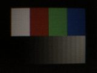 |
| s:0x02 bit 5 0x3a → 0x1a | cor (2 medidas) | 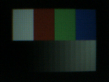 |
| s:0x0c bit 5 0x20 → 0x00 | cor (4 medidas) rampa (5 medidas) | 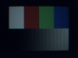 |
| s:0x0c bit 4 0x20 → 0x30 | cor (1 medidas) | |
| s:0x0c bit 3 0x20 → 0x28 | cor (1 medidas) | |
| s:0x0c bit 2 0x20 → 0x24 | cor (2 medidas) | |
| s:0x0c bit 1 0x20 → 0x22 | cor (3 medidas) | |
| s:0x0d bit 5 0x20 → 0x00 | cor (8 medidas) rampa (16 medidas) brilho 34.62 (ref 23.5) | |
| s:0x0d bit 4 0x20 → 0x30 | cor (7 medidas) rampa (6 medidas) | 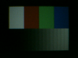 |
| s:0x0d bit 3 0x20 → 0x28 | cor (3 medidas) | |
| s:0x0d bit 2 0x20 → 0x24 | cor (1 medidas) | |
| s:0x10 bit 7 0x41 → 0xc1 | cor (16 medidas) rampa (16 medidas) brilho 50.70 (ref 23.5) | |
| s:0x10 bit 6 0x41 → 0x01 | cor (16 medidas) rampa (14 medidas) brilho 0.19 (ref 23.5) | |
| s:0x10 bit 5 0x41 → 0x61 | cor (16 medidas) rampa (14 medidas) brilho 36.09 (ref 23.5) | |
| s:0x10 bit 4 0x41 → 0x51 | cor (15 medidas) rampa (11 medidas) brilho 29.42 (ref 23.5) | |
| s:0x10 bit 3 0x41 → 0x49 | cor (7 medidas) rampa (7 medidas) | |
| s:0x11 bit 5 0x00 → 0x20 | PAROU | |
| s:0x11 bit 4 0x00 → 0x10 | fps 1.7 linha 320.00 cor (16 medidas) rampa (16 medidas) brilho 192.67 (ref 23.5) | |
| s:0x11 bit 3 0x00 → 0x08 | fps 3.2 cor (16 medidas) rampa (16 medidas) brilho 136.08 (ref 23.5) | 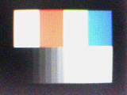 |
| s:0x11 bit 2 0x00 → 0x04 | fps 5.7 cor (16 medidas) rampa (16 medidas) brilho 102.22 (ref 23.5) | |
| s:0x11 bit 1 0x00 → 0x02 | fps 9.6 cor (16 medidas) rampa (16 medidas) brilho 72.09 (ref 23.5) | |
| s:0x11 bit 0 0x00 → 0x01 | fps 14.4 cor (16 medidas) rampa (15 medidas) brilho 48.56 (ref 23.5) | |
| s:0x12 bit 6 0x7c → 0x3c | cor (16 medidas) rampa (16 medidas) | |
| s:0x12 bit 4 0x7c → 0x6c | cor (14 medidas) | 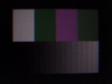 |
| s:0x12 bit 3 0x7c → 0x74 | linha 320.00 cor (15 medidas) rampa (16 medidas) brilho 107.73 (ref 23.5) | 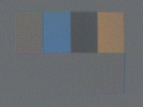 |
| s:0x12 bit 1 0x7c → 0x7e | cor (10 medidas) rampa (16 medidas) brilho 52.58 (ref 23.5) | |
| s:0x13 bit 7 0x80 → 0x00 | fps 26.8 cor (16 medidas) rampa (13 medidas) brilho 28.28 (ref 23.5) | |
| s:0x13 bit 5 0x80 → 0xa0 | PAROU | |
| s:0x13 bit 4 0x80 → 0x90 | PAROU | |
| s:0x13 bit 2 0x80 → 0x84 | cor (14 medidas) rampa (16 medidas) brilho 74.50 (ref 23.5) | |
| s:0x13 bit 1 0x80 → 0x82 | cor (16 medidas) rampa (13 medidas) brilho 10.51 (ref 23.5) | |
| s:0x13 bit 0 0x80 → 0x81 | cor (16 medidas) rampa (13 medidas) brilho 33.21 (ref 23.5) | |
| s:0x14 bit 5 0x80 → 0xa0 | cor (16 medidas) rampa (11 medidas) brilho 35.89 (ref 23.5) | 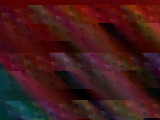 |
| s:0x14 bit 3 0x80 → 0x88 | cor (16 medidas) rampa (14 medidas) | 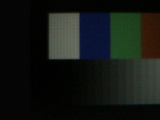 |
| s:0x14 bit 2 0x80 → 0x84 | cor (16 medidas) rampa (16 medidas) brilho 43.69 (ref 23.5) | |
| s:0x14 bit 0 0x80 → 0x81 | PAROU | |
| s:0x15 bit 6 0x34 → 0x74 | cor (14 medidas) | 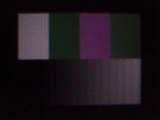 |
| s:0x15 bit 0 0x34 → 0x35 | linha 320.00 cor (2 medidas) | 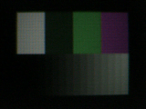 |
| s:0x16 bit 1 0x03 → 0x01 | PAROU | |
| s:0x16 bit 0 0x03 → 0x02 | PAROU | |
| s:0x17 bit 7 0x1c → 0x9c | cor (16 medidas) rampa (13 medidas) brilho 6.22 (ref 23.5) | |
| s:0x17 bit 6 0x1c → 0x5c | cor (14 medidas) rampa (16 medidas) brilho 16.74 (ref 23.5) | 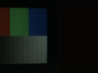 |
| s:0x17 bit 5 0x1c → 0x3c | cor (16 medidas) rampa (16 medidas) | 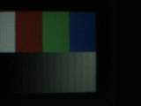 |
| s:0x17 bit 4 0x1c → 0x0c | cor (16 medidas) rampa (12 medidas) | |
| s:0x17 bit 3 0x1c → 0x14 | cor (8 medidas) rampa (8 medidas) | 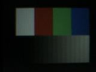 |
| s:0x17 bit 2 0x1c → 0x18 | rampa (4 medidas) | 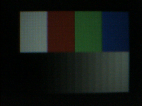 |
| s:0x18 bit 7 0xbd → 0x3d | linha 320.00 cor (16 medidas) rampa (12 medidas) brilho 6.33 (ref 23.5) | |
| s:0x18 bit 5 0xbd → 0x9d | cor (2 medidas) rampa (2 medidas) | |
| s:0x19 bit 7 0x06 → 0x86 | linha 320.00 cor (15 medidas) rampa (12 medidas) brilho 13.76 (ref 23.5) | |
| s:0x19 bit 6 0x06 → 0x46 | cor (11 medidas) rampa (15 medidas) | |
| s:0x19 bit 5 0x06 → 0x26 | cor (8 medidas) rampa (8 medidas) | |
| s:0x1a bit 7 0xf6 → 0x76 | rampa (14 medidas) brilho 46.99 (ref 23.5) | |
| s:0x1a bit 6 0xf6 → 0xb6 | brilho 30.56 (ref 23.5) | |
| s:0x1b bit 7 0x04 → 0x84 | cor (16 medidas) rampa (14 medidas) | |
| s:0x1b bit 6 0x04 → 0x44 | cor (16 medidas) rampa (13 medidas) | 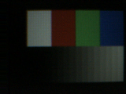 |
| s:0x1b bit 5 0x04 → 0x24 | cor (10 medidas) rampa (9 medidas) | 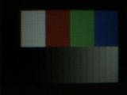 |
| s:0x1b bit 4 0x04 → 0x14 | rampa (7 medidas) | |
| s:0x1b bit 0 0x04 → 0x05 | cor (7 medidas) rampa (8 medidas) | |
| s:0x1f bit 0 0x00 → 0x01 | cor (16 medidas) rampa (14 medidas) brilho 0.42 (ref 23.5) | |
| s:0x26 bit 2 0xa0 → 0xa4 | cor (16 medidas) rampa (16 medidas) brilho 113.54 (ref 23.5) | 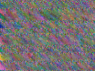 |
| s:0x27 bit 4 0x9a → 0x8a | cor (10 medidas) rampa (8 medidas) | |
| s:0x27 bit 1 0x9a → 0x98 | rampa (3 medidas) | |
| s:0x27 bit 0 0x9a → 0x9b | PAROU | |
| s:0x28 bit 7 0xa0 → 0x20 | linha 320.00 cor (10 medidas) | 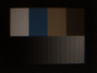 |
| s:0x28 bit 6 0xa0 → 0xe0 | cor (16 medidas) rampa (13 medidas) brilho 58.25 (ref 23.5) | |
| s:0x28 bit 5 0xa0 → 0x80 | linha 320.00 cor (13 medidas) rampa (11 medidas) | 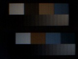 |
| s:0x28 bit 1 0xa0 → 0xa2 | cor (16 medidas) rampa (13 medidas) brilho 39.14 (ref 23.5) | |
| s:0x2a bit 6 0x80 → 0xc0 | fps 17.9 cor (16 medidas) rampa (16 medidas) brilho 45.89 (ref 23.5) | |
| s:0x2a bit 5 0x80 → 0xa0 | fps 22.1 cor (16 medidas) rampa (16 medidas) brilho 34.69 (ref 23.5) | |
| s:0x2a bit 1 0x80 → 0x82 | PAROU | |
| s:0x2b bit 7 0x00 → 0x80 | fps 25.8 cor (16 medidas) rampa (12 medidas) brilho 28.92 (ref 23.5) | |
| s:0x2b bit 6 0x00 → 0x40 | fps 26.8 cor (2 medidas) | |
| s:0x2d bit 1 0x01 → 0x03 | PAROU | |
| s:0x2f bit 6 0x3d → 0x7d | rampa (4 medidas) | |
| s:0x31 bit 4 0x00 → 0x10 | cor (10 medidas) rampa (7 medidas) brilho 19.55 (ref 23.5) | |
| s:0x4c bit 5 0x00 → 0x20 | cor (10 medidas) rampa (16 medidas) brilho 30.13 (ref 23.5) | |
| s:0x60 bit 7 0x29 → 0xa9 | cor (16 medidas) rampa (13 medidas) brilho 35.84 (ref 23.5) | |
| s:0x60 bit 3 0x29 → 0x21 | cor (4 medidas) | |
| s:0x60 bit 1 0x29 → 0x2b | cor (4 medidas) | |
| s:0x61 bit 6 0x42 → 0x02 | cor (12 medidas) rampa (8 medidas) brilho 18.98 (ref 23.5) | |
| s:0x65 bit 7 0x00 → 0x80 | cor (8 medidas) rampa (5 medidas) | |
| s:0x65 bit 6 0x00 → 0x40 | cor (2 medidas) | |
| s:0x69 bit 3 0x38 → 0x30 | cor (16 medidas) rampa (16 medidas) brilho 47.24 (ref 23.5) | |
| s:0x69 bit 2 0x38 → 0x3c | cor (1 medidas) | |
| s:0x69 bit 1 0x38 → 0x3a | cor (16 medidas) rampa (11 medidas) brilho 16.93 (ref 23.5) | |
| s:0x69 bit 0 0x38 → 0x39 | cor (14 medidas) rampa (10 medidas) brilho 19.02 (ref 23.5) | |
| s:0x6f bit 4 0x88 → 0x98 | cor (2 medidas) | 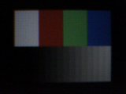 |
| s:0x6f bit 3 0x88 → 0x80 | cor (1 medidas) | |
| s:0x71 bit 6 0x00 → 0x40 | cor (11 medidas) rampa (15 medidas) brilho 44.42 (ref 23.5) | |
| s:0x71 bit 5 0x00 → 0x20 | cor (11 medidas) rampa (7 medidas) | 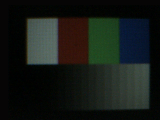 |
| s:0x75 bit 7 0x8e → 0x0e | cor (12 medidas) rampa (14 medidas) | |
| s:0x75 bit 6 0x8e → 0xce | linha 100.00 cor (16 medidas) rampa (14 medidas) brilho 0.00 (ref 23.5) | |
| s:0x75 bit 5 0x8e → 0xae | linha 100.00 cor (16 medidas) rampa (14 medidas) brilho 0.00 (ref 23.5) |  |
| s:0x75 bit 4 0x8e → 0x9e | cor (16 medidas) rampa (14 medidas) brilho 0.00 (ref 23.5) | |
| s:0x76 bit 6 0x00 → 0x40 | cor (16 medidas) rampa (16 medidas) brilho 99.79 (ref 23.5) | |
| s:0x76 bit 5 0x00 → 0x20 | PAROU | |
| s:0x78 bit 6 0x80 → 0xc0 | cor (8 medidas) rampa (13 medidas) brilho 18.04 (ref 23.5) | 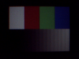 |
| s:0x78 bit 5 0x80 → 0xa0 | cor (6 medidas) rampa (6 medidas) | 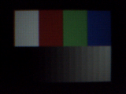 |
| s:0x78 bit 4 0x80 → 0x90 | cor (4 medidas) rampa (3 medidas) | |
| s:0x7a bit 6 0x80 → 0xc0 | cor (8 medidas) rampa (11 medidas) brilho 19.14 (ref 23.5) | |
| s:0x7a bit 5 0x80 → 0xa0 | cor (7 medidas) rampa (5 medidas) | |
| s:0x7a bit 4 0x80 → 0x90 | cor (2 medidas) | |
| s:0x7d bit 7 0xf7 → 0x77 | cor (12 medidas) rampa (16 medidas) brilho 31.98 (ref 23.5) | |
| s:0x7d bit 6 0xf7 → 0xb7 | cor (12 medidas) rampa (16 medidas) brilho 31.66 (ref 23.5) |